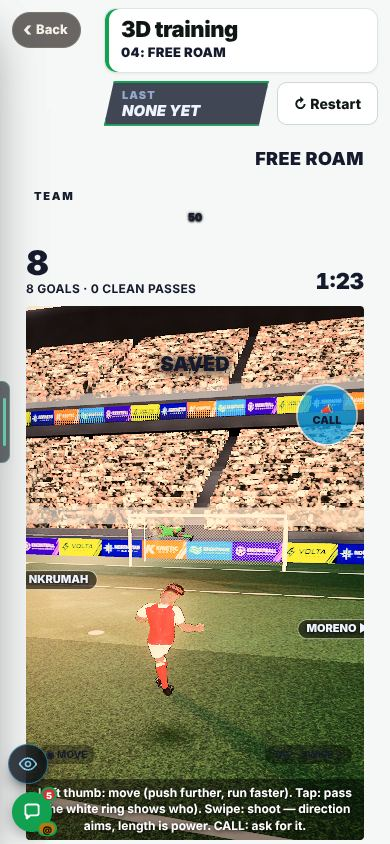
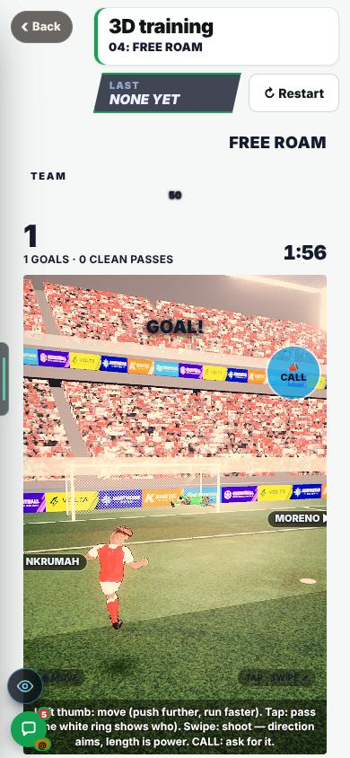
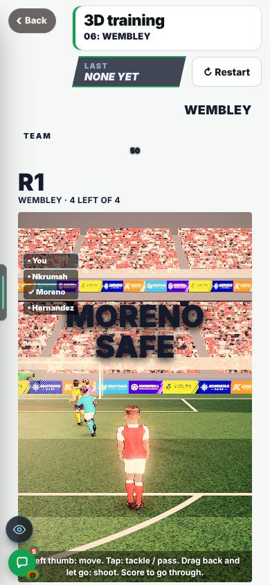
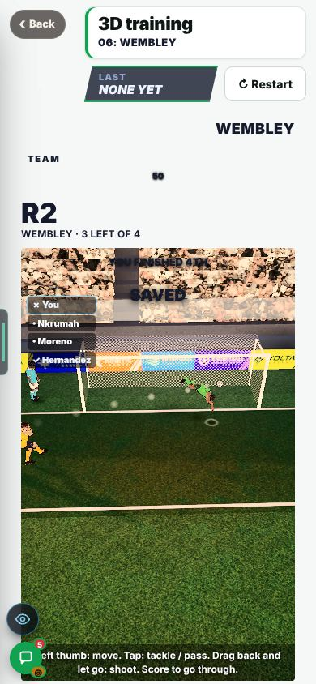
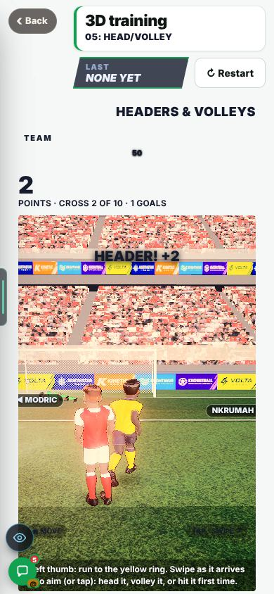
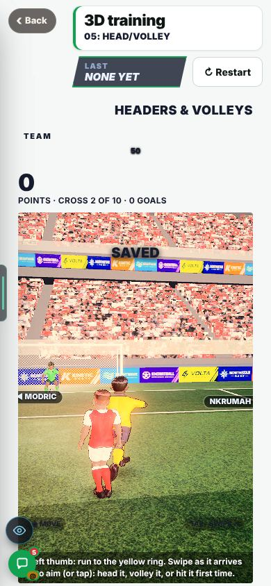

On the Harry branch, not live yet.
Overnight round, 20 Oct 2026. In Admin → Patch notes this is v0.81.
Harry, 20 Oct: the keepers in the 3D minigames (Wembley, 3D training) feel overpowered. A decent player was saved 52 to 70% of the time, depending on the game. Fair is about 1 shot in 3 saved.
His cover had a hard edge. He saved everything within about 2.6 m of his spot and missed everything beyond it.
The edge is now a slope.
How often the keeper saves a shot that was on target, before → after. The target is about 1 in 3 (33%). 600 shots per bot. A shot is on target when it goes in with the keeper removed.


Look for: three shots in Free Roam on a phone-size screen: SAVED, SAVED, then a GOAL (score 0 to 1). 6 seconds.
At keeper 70, a decent player was still saved 38% of the time. Wembley’s keeper was stronger than the other two games’ (66). B1 had raised it from 36 to 70.
Wembley’s keeper is 66, the same as the other two games. The test floor for the session length moved from 100 s to 75 s, and the test says why. The 80-rated striker still wins more than his fair quarter (30%, was 40%). Bar hits were checked for each shooter.


The win bar is 8 points. At 8 the average bot wins 53% of its sessions, the same as before. Free Roam’s win bar (10) is unchanged. It was never measured, and goals now come easier. Q13 on the Patch Notes Questions page.
Share of sessions the average bot wins. 53% is what it was before this build.


An 80-power player who hits a firm shot from 12 to 20 m sends it over the bar about 78% of the time.
A 3D swipe always strikes the middle of the ball.
Found, not fixed. Q15 on the Patch Notes Questions page.
The AI men in Wembley are saved 18% of the time. A human is saved 33%.
Every AI man aims tight to the post.
Found, not fixed.
Near a full stretch, a ball may pass just beyond the drawn glove.
The dive animation was not changed. His reach is shorter. Reasoned from the code. Not seen.
A save and a goal were each seen once per game, at 390 × 844, on a test screen. Not on a phone.
The numbers come from bots, not people.
Play a few shots in each game and see if it feels fair.
Save rate of on-target shots, before → after.
Keeper settings. Dive speed, grab and all sizes unchanged.
Against better keepers (18 m). Saved 35% against a 90 keeper, 44% against a 70, 49% against a 50.
Wembley. Keeper 70 → 66. Sessions 146 s → 83 s. The 80 wins 30% (was 40%; fair is 25%).